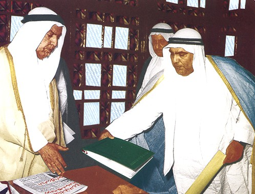

-Kuwait is a country located in the Middle East and is surrounded by the Arabian Gulf. Kuwait is bounded to the west and north by Iraq, to the east by the Persian Gulf, and to the south by Saudi Arabia. It was a British protectorate from 1899 until 1961 until it became fully independent. Kuwait is ruled by the Al-Sabah family since 1756 and it's fortunes have been linked to foreign commerce from the beginning. The form of government is a consitutional monarchy with a legislative house which is the National Assembly consisted of 50 members of Parliment
-The liberation tower in Kuwait is the fifth largest telecommunication tower in the world.

-The Kuwaiti dinar is the world's highest-valued currency.

-Kuwait has the sixth largest oil reserve in the world.
-Some evidence of the first settlement in Kuwait dates back to 4500 BC
-Kuwait was the first country in the gulf to establish a consitution and Parliment. On Monday, November 11, 1962, the late Amir Sheikh Abdullah Al-Salem Al-Sabah, the 11th ruler of Kuwait, fondly known as the “father of the Constitution,” approved the constitution.
 Visit Page 2 Visit Page 3